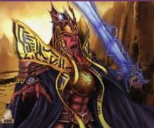

Characters
Thom
Is Elysian Dusk
Makai
Is Leen
Jack
Is Chester
Mike
Is Derriphan
Kressh
Kressh was a follower of the Dark Lord of the Sith Marka Ragnos. Upon Ragnos' death he clashed with his rival Sith Lord Naga Sadow over control of the Sith. He faked his death and laid in wait while Naga Sadow invaded the Republic. Upon Sadow's retreat to Korriban Kressh attacked Sadow. He was killed in the battle.
He created a holocron and put all of his knowledge into it. What secrets might it hold?

Naga Sadow
Naga Sadow was a follower of the Dark Lord of the Sith Marka Ragnos. Upon Ragnos' death he clashed with his rival Sith Lord Kressh over control of the Sith. After thinking he had killed Kressh he invaded the Republic. Using force illusions he made his fleet look larger than it was. Once the Republic broke his force illusions they counter attacked driving him further and further back into Sith space. Upon retreating to Korriban he was attacked by the still alive Lord Kressh. He defeated Kressh but was immediately attacked by a Republic fleet. Seeing he had no chance of winning, he fled the battle into the unknown.
Lord Vitiate
Lord Vitiate is a powerful Sith. He sat out the battles between Kressh and Sadow, and again during Sadow's invasion of the Republic. Now that Sadow has fleet he has issued orders to the Sith fleet to retreat to specific coordinates. He plans for you are unknown at this time.
Lord Teris
Lord Teris was the number four in the Sith Empire. He was struck down by cowards.